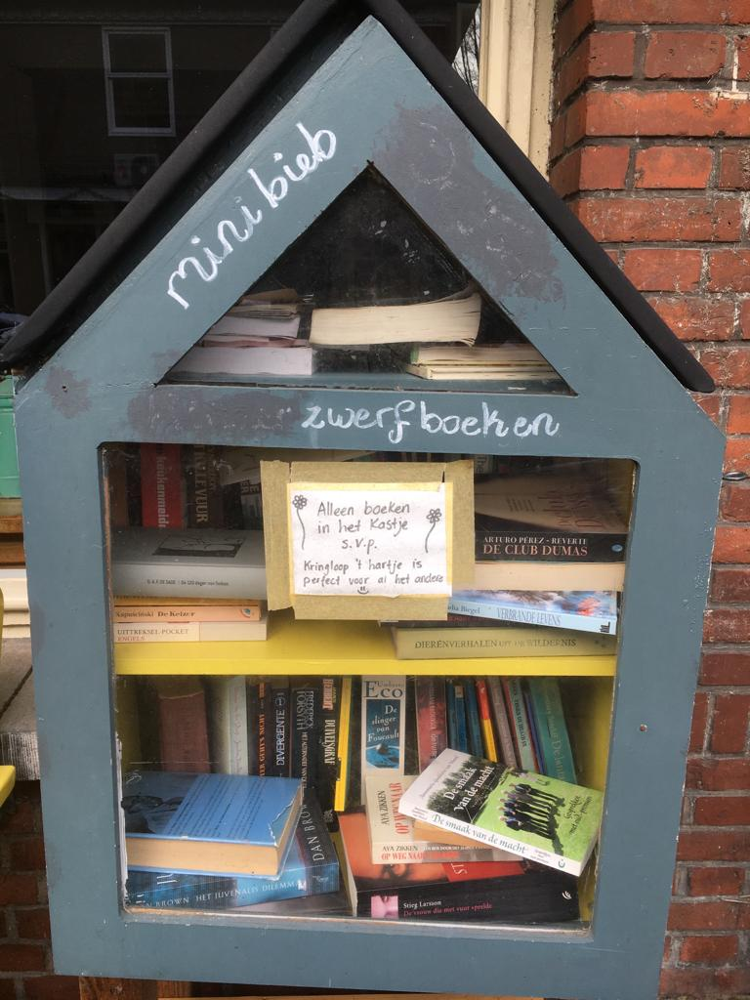

Boekenhuisje
Door Marie Janette Haspels geschreven
In de charmante straten van Amsterdam stuit je op een uniek fenomeen: boekenhuisjes. Deze kleine, kleurrijke kasten zijn verspreid over de stad en gevuld met een eclectische mix van boeken. Het idee is simpel maar krachtig -
neem een boek mee en laat er zelf ook een achter. Het resultaat is een informeel netwerk van gratis bibliotheken die de charme van de stad versterken.
De boekenhuisjes fungeren niet alleen als bronnen van gratis literatuur, maar ook als sociale ontmoetingspunten. Mensen stoppen, bladeren door de boeken en laten soms persoonlijke boodschappen achter.
Het is een prachtig voorbeeld van gemeenschapszin en een laagdrempelige manier om kennis te delen.

Of je nu een lokale bewoner bent of een toerist, neem de tijd om deze boekenhuisjes te ontdekken tijdens je wandeling door Amsterdam. Het is niet alleen een kans om diverse literatuur te ontdekken,
maar ook om de warmte en gastvrijheid van de stad te ervaren terwijl je geniet van de verrassingen die deze literaire schatkisten te bieden hebben.
twee boekenhuisjes die ik heb bezocht zijn In Watergraafsmeer (Amsterdam oost Linnaeusparkweg en fraunhoferstraat)